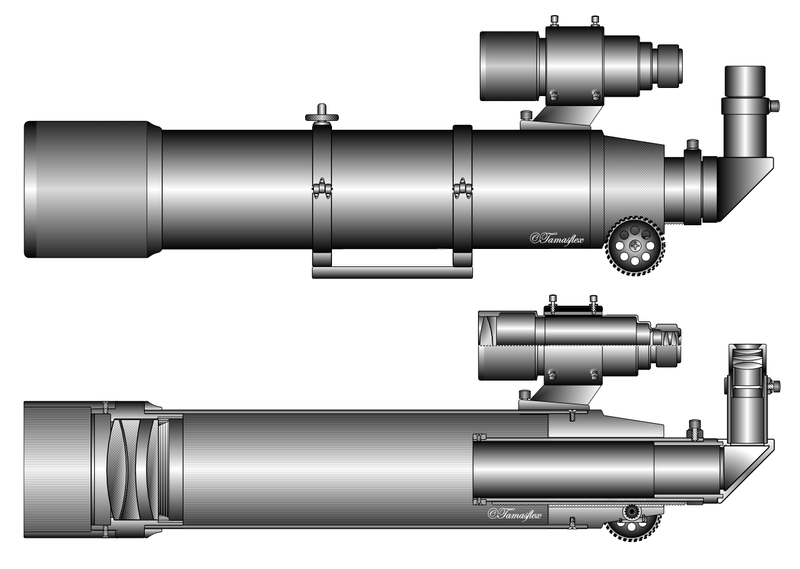
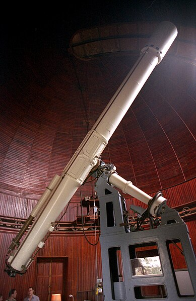
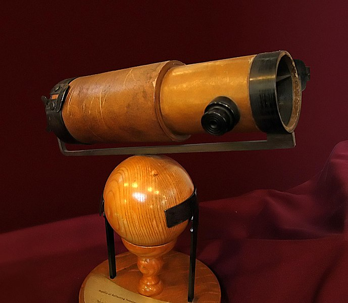

A távcső távoli tárgyak látószögének felnagyítására szolgáló eszköz. Teleszkóp és messzelátó néven is ismert, ezen elnevezései a görög tele = „messze", „távol” és szkopein = „látni”, „nézni” szavakból (teleszkoposz = messzelátó) származnak.
A távcső kifejezés a szélesebb néprétegek számára az optikai távcsöveket jelenti. Ezek a látható fény tartományába eső elektromágneses sugárzást gyűjtik össze lencsékkel vagy tükrökkel. A lencsés távcsövek összefoglaló neve refraktor, mivel ezek a fénytöréssel (refrakcióval) állítják elő a képet, a tükrös távcsövek pedig a reflektorok (reflexió = fényvisszaverődés).  Távcsöveket nemcsak a látható, hanem az emberi szem számára láthatatlan (infravörös, rádió-, röntgen-, gamma-) sugárzások megfigyelésére is kifejlesztettek. A rádióhullámú tartományokban működő eszközöket rádiótávcsöveknek nevezik.
50 centiméteres lencsés távcső (refraktor) a nizzai csillagvizsgálóban
60 centiméteres tükrös távcső Ostrowikban, Varsó mellett A távcsövek különösen a csillagászatban nélkülözhetetlenek, de gyakran alkalmazzák őket más műszerekben (például teodolitokban, éjjellátó készülékekben) is.
Már az ókori Asszíriában is viszonylag jó lencséket állítottak elő, de csak feltételezés, hogy ezekből távcsöveket is építettek volna. Az optikai lencséket ismerték az arabok és a perzsák is. Roger Bacon a 13. században írt arról, hogy optikai elemek felhasználásával a távoli tárgyak közelebbinek láttathatók. Leonard Digges angol földmérő 1540 körül már készített olyan távcsövet, amellyel 2-3-szoros nagyítást ért el. Halála után kiadott könyvében, a Pantometriában valószínűleg katadioptrikus távcsövet ír le, teljesen valószínűtlen, hogy azt kísérletezés nélkül, spekuláció útján kitalálhatta volna. Leonardo da Vinci jegyzetei között szerepel egy nagyon pontosan leírt távcső, amelynek még okulárkihuzata is volt (hogy a lencsék távolságát változtatva élesíthesse a képet). Ez olyan praktikus eszköz, amelynek kifejlesztése távcsőkészítő tapasztalatok és használat nélkül szintén nem valószínű.
Az első, biztosan létező távcsöveket Hollandiában készítették 1608 körül; a távcső feltalálását Hans Lippershey-nek (vagy Lipperhey) tulajdonítják, aki 1608. október 2-án kért rá szabadalmi védettséget. Két hét múlva Lipperhey konkurense, Jacob Adriaanszon (majd kicsit később az összetett mikroszkóp feltalálója, Zacharias Janssen) is bejelentést tett, de Lipperhey ismertette meg a világgal az új eszközt, amelyet rövidesen gyártani kezdtek.
Amikor az új találmány híre elért hozzá, Galileo Galilei is megépítette saját, lényegesen jobb távcsövét. Míg a korábbi műszerek nagyjából tízszeres nagyításra voltak képesek, Galilei a maga alaposabb optikai ismereteivel hatvanszoros nagyítást ért el. Az új eszközt 1609 augusztusában, a velencei Szent Márk-székesegyház harangtornyában mutatta be Leonardo Donato velencei dózsénak.
Elsőként Galilei használta a távcsövet csillagászati megfigyelésekhez: vele fedezte fel a Jupiter négy holdját, a Vénusz fázisváltozásait és a Hold hegyeit. Galilei kezdetben perspicillumnak, később telescopiumnak nevezte el az eszközt. Ezeket a korai – domború és homorú lencsékből álló, egyenes állású képet adó – műszereket holland, vagy Galilei-féle távcsöveknek nevezik; napjainkban is hasonló elven működik a hétköznapi életben használt kézi távcsövek többsége.
Newton 1672-ben használt teleszkópjának másolata Johannes Kepler elsőként írta le az optikai lencsék tulajdonságait és használatát az Astronomiae Pars Optica és Dioptrice című könyveiben. Kepler újfajta, két domború lencsét tartalmazó (Kepler-féle vagy csillagászati) távcsövet épített, amely fordított állású képet adott ugyan, de csillagászati célokra alkalmasabb volt elődeinél.
Az első tükrös távcsövet (reflektort) 1672-ben építette Isaac Newton, miután a fénytörés jelenségét vizsgálva ráébredt arra, hogy nemcsak a prizmák de a lencsék is színeire bontják a fehér fényt, azaz a csillagok fehér pontok helyett színes foltok lesznek. Ez az úgynevezett kromatikus aberráció (színhiba) kiküszöbölhető, ha az objektív helyett homorú tükröt használunk. Jelenleg szinte minden komoly, nagy teljesítményű távcső reflektor, mivel a tükröket olcsóbb és egyszerűbb előállítani, továbbá egy méternél nagyobb átmérőjű lencséket gyakorlatilag lehetetlen a szükséges pontossággal előállítani és torzulásmentesen távcsőtubusba szerelni. Napjainkban több, 10 méter körüli tükörátmérőjű csillagászati távcső működik, és megkezdődött a Giant Magellan Telescope építése, ennek átmérője 24,5 méter lesz. A napjainkban tervezett legnagyobb távcső az Overwhelmingly Large Telescope, ennek tükre 100 méter átmérőjű lenne, ha megépülne.
A Newton-féle távcső mára több változatban létezik, de a reflektorok népszerűsége töretlen; a Hubble űrtávcső is tükrös rendszerű. A kisebb távcsövek—műszerek, kamerák, binokulárok — viszont mind lencsések.